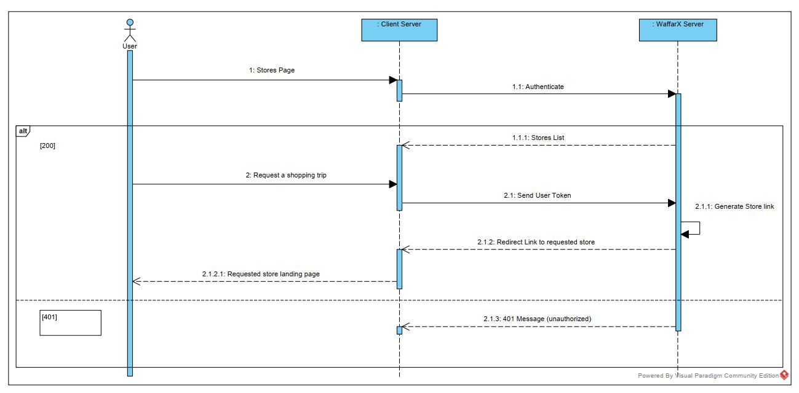

User Navigation Flow

As shown above, this diagram illustrates the flow of the end-user as they navigate the Cashback Rewards Interface via the Client Application.
"Step 1 :" User calls the stores page.
User opens Client App, selects Cashback Rewards Section, All Stores.
"Step 1.1:" WaffarX Client Is Get Authenticated.
Client is authenticated & granted Authorization Token.
"Step 1.1.1:" Return Stores List.
WAFFARX Server returns All Stores data.
"Step 2:" User request shopping trip for a store.
User browses, requests Store Page, checks Cashback terms & conditions, requests Shopping Trip.
"Step 2.1:" Send User Token.
Client sends User Token for identification.
"Step 2.1.1:" Generate Store Link
WAFFARX Server generates Redirection Link to requested store.
"Step 2.1.2:" Redirect Link To Requested Store
WAFFARX Server returns Redirection Link to requested store.
"Step 2.1.2.1:" Chosen Merchant Landing Page User is redirected from Client App to requested store Landing Page.
"Step 2.1.3:" 401 Message (UNAUTHORIZED) Error message sent if the Authentication Token is not valid.